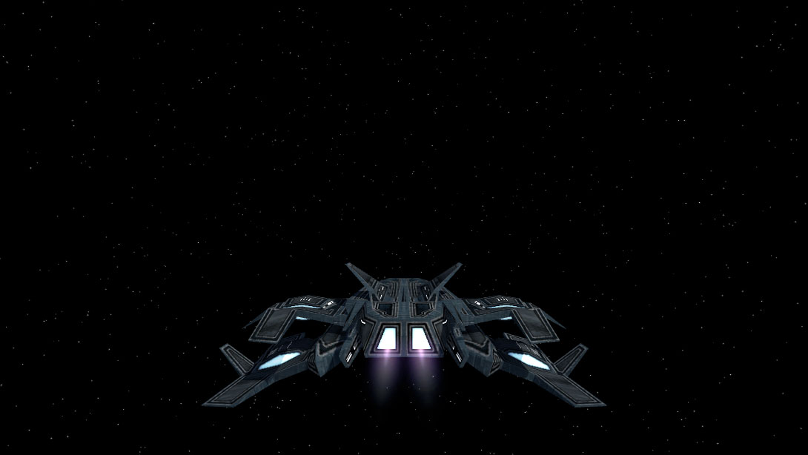
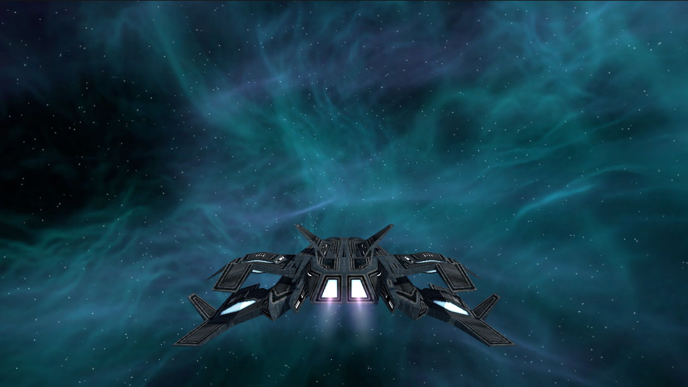
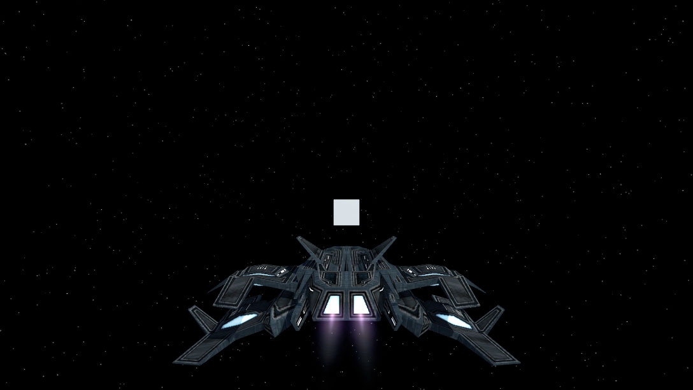
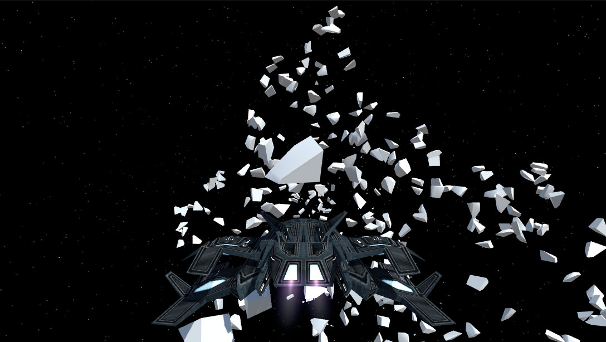
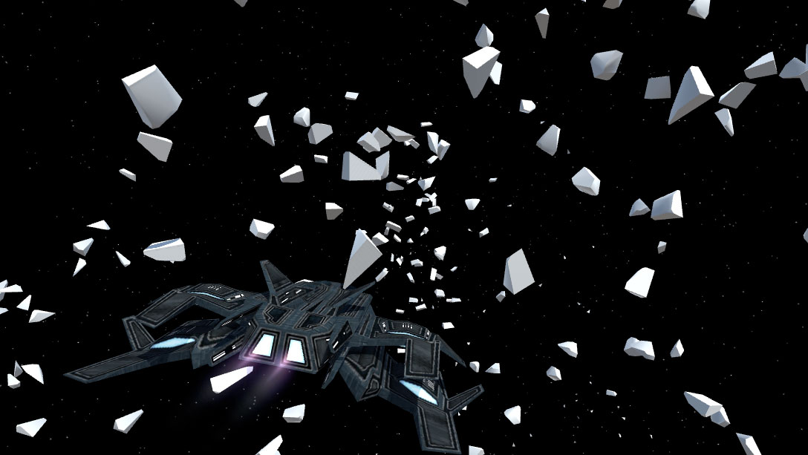
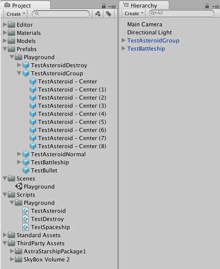

No post anterior sobre o meu projeto Final Frontier eu escrevi sobre como estava utilizando o playground para testar o gameplay e como fiz um modelo 3D feito no Blender ser destruído na Unity. Nest post vou falar sobre skybox e algumas melhorias que fiz para a destruição ser maior, além de outros detalhes sobre a organização do projeto na Unity.
Ao infinito e além
Skybox é o nome da textura que fica no "fundo" do cenário renderizado pela câmera principal. O skybox padrão da Unity é um céu azul e um "chão" marrom no horizonte e, além de eu achar feio, este skybox padrão não combinava com meu jogo. Então, fui na Asset Store procurar uma opção gratuita e que fizesse mais sentido e foi então que encontrei o incrível Skybox Volume 2 (Nebula)!

Esta coleção de skyboxes possui 7 opções diferentes, todas bem interessantes e muito bem detalhadas. Por enquanto vou utilizar o Stars01 (imagem acima), mas vou colocar alguns exemplos abaixo de outras opções que eu gostei. Apesar de todas opções serem bem legais é bom manter no projeto apenas as que serão utilizadas por que esta coleção tem 80MB. Por enquanto vou deixar todas, mas ao longo do projeto provavelmente vou remover as que não irei utilizar. Existem outros assets no diretório Standard Assets que não estou usando e logo vou remover do projeto também.


Adicionando mais destruição
No post anterior eu tinha colocado apenas uma caixa que, quando o tiro colide com ela, o modelo 3D é substituído pela versão "destruída" e a física é aplicada nela para que os pedaços voem pelo ar. Desta vez decidi fazer uma parede de caixas que explode as demais quando os destroços de uma voarem após a colisão com o tiro, e o resultado fica conforme a sequencia abaixo.



Muitos modelos 3D voando pelo cenário com física para colisão podem fazer o jogo ficar pesado. Não é o caso para o meu jogo ainda, mas quando mais objetos estiverem no cenário, mais modelos serão desenhados na tela, o que pode ser um problema para alguns aparelhos com hardware limitado. É muito cedo para se preocupar em otimizar isso, pois ainda nem sei como o jogo será, mas fiz algumas alterações para minimizar este problema.
O modelo do tiro e dos da caixa destruída são removidos da cena pelo método da Unity chamado Destroy(gameObject, timer), onde o timer é o tempo para que o objeto seja destruído após sua criação. Nada demais, mas já ajuda a manter a memória livre de objetos desnecessários.
Organizando a casa
Uma das alterações que fiz, seguindo a sugestão do leitor Felipe, foi colocar os assets baixados em um diretório separado ao invés de deixá-los jogados no projeto. Não tinha feito isso antes por ter apenas o Astra Starship Fleet Package no projeto, mas agora com o Skybox Volume 2 (Nebula) já faz mais sentido começar a organizar melhor. Ambos assets estão na pasta ThirdParty Assets, como mostra a imagem abaixo. Geralmente utilizo este nome ou algo parecido para esta pasta.

Outra alteração que fiz foi criar um novo prefab chamado TestAsteroidGroup, e adicionei 9 caixas dentro dele para formar a parede. É sempre bom criar prefabs para agrupar objetos, mesmo sendo outros prefabs. Outro detalhe visto na imagem acima é que estou colocando prefabs e scripts em diretórios com o mesmo nome da minha cena Playground. Estou fazendo isto por que quero manter tudo usado no playground separado do protótipo, mas sem a necessidade de criar um novo projeto.
Próximos passos
Eu mencionei no post passado mas acabei não tendo tempo de trabalhar na movimentação da nave, pelo menos não na implementação. Pesquisei algumas opções de controle e câmera, e no próximo post vou falar mais sobre isto. Se eu tiver tempo também quero começar a fazer um sistema simples de spawn para os meteoros (e talvez até achar assets para substituir as caixas).
O andamento do projeto pode ser conferido no GitHub, e neste link você pode ver as alterações no projeto até este post (também sugestão do leitor Felipe). Todos posts desta série sobre meu projeto podem ser vistos na tag Final Frontier, e como sempre qualquer sugestão ou opinião é bem vinda!